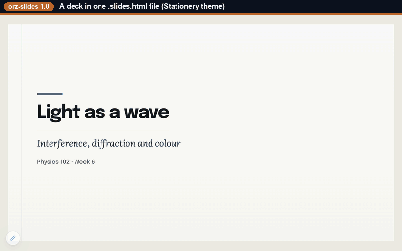
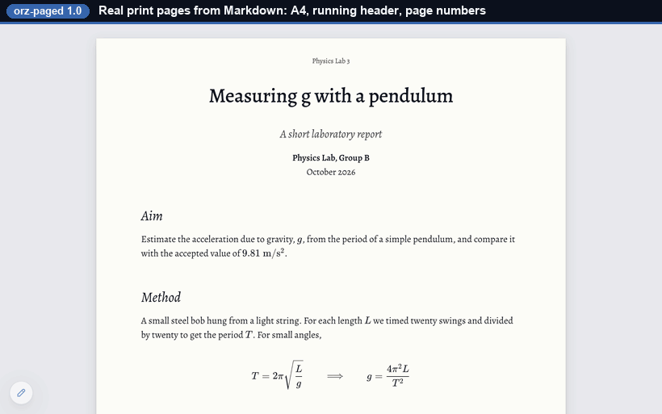

The self-editing document family
This page describes orz-mdhtml 1.1 (embeds orz-markdown 2.5) · orz-slides 1.0 (embeds orz-markdown 2.4) · orz-paged 1.0 (embeds orz-markdown 2.3)
Three tools, one renderer. Each turns your Markdown into a single, self-editing HTML file. Different shapes for different documents.
Start a new editable file
Open a genuine starter file in a new tab, click the pencil button, edit in the browser, then save or download your own local copy.
Slide deck
A presentation with layouts, themes, notes, and speaker view.
Create .slides.htmlWhat they all share
One portable file
The Markdown source lives inside the file; it renders itself on open. Nothing to install to read it. Beside it you can keep the same text as a plain file (notes.md), for git or an AI agent.
Edit in place
A built-in editor with live preview. Save writes back to the same file (in Chromium browsers).
Copy as Markdown
Select rendered content, copy, and get clean Markdown source back, ready to reuse anywhere.
Portable metadata
Generated files can carry authorship, license, canonical source, date, description, and keywords in their own HTML head.
Inline or CDN
Files carry their engine by default (1–2 MB); --cdn makes a small file that loads it from jsDelivr. Either way fonts, math styles, diagram libraries and the editor (and an .md.html's themes) load from CDNs.
Checkable
The verifier rebuilds a file's shell with the published package of its version and compares. A file cannot prove its own integrity: treat files from unknown sources like programs.
orz-mdhtml
A continuous document.
A text (notes.md) and one file that reads like a themed web page: twelve themes, three
line lengths, a reader's text size. The pencil at the bottom-left opens the editor — the Markdown beside a
live preview (split, editor only or preview only) — and Save writes the file back in place. Copying from the
page copies Markdown.
- Best for articles, documentation, notes, handouts, web-style reading.
npx orz-mdhtml@1 new notes.md;inspectsays what any file is and what to do next.

orz-slides
A slide deck that edits itself.
A text (talk.slides.md) and one file that presents it in any browser: overview, speaker
view, timer, full screen, print one slide per page. 14 themes, 16:9 or 4:3, a layout grammar (presets,
splits, boxes, floats) and template pages (title, section, outline, closing). Edit the whole deck beside a
live slide card, or one slide at a time in the layout editor.
- Best for talks, lectures, lightweight decks you can email.
npx orz-slides@1 new talk.slides.md --template talk;inspect --layoutchecks that every box fits.
orz-paged
A paginated print document.
A text (report.paged.md) and one file that shows it as real pages, laid out with
Paged.js: A4, Letter and other sizes, margins, running headers and footers,
page numbers, a contents page with page numbers, versions (an exam with or without its answer key). Edit side
by side, then save a PDF by printing — no PDF binary, no server. Twelve templates (articles,
reports, exams, letters, CVs, notes) and nine print themes.
- Best for papers, reports, CVs, exams, anything destined for paper or PDF.
npx orz-paged@1 new report.paged.md --template report-page;inspectchecks the header.

Which one?
| You want… | Use |
|---|---|
| An article, note, README, or web-style document | .md.html |
| To present slides from a single file | .slides.html |
| A print or PDF document: paper, report, CV, exam | .paged.html |
Just to edit Markdown and keep the .md | the editor |
npx orz-mdhtml@1 upgrade old.md.html
(or orz-slides@1, orz-paged@1). See Upgrading from 0.x.